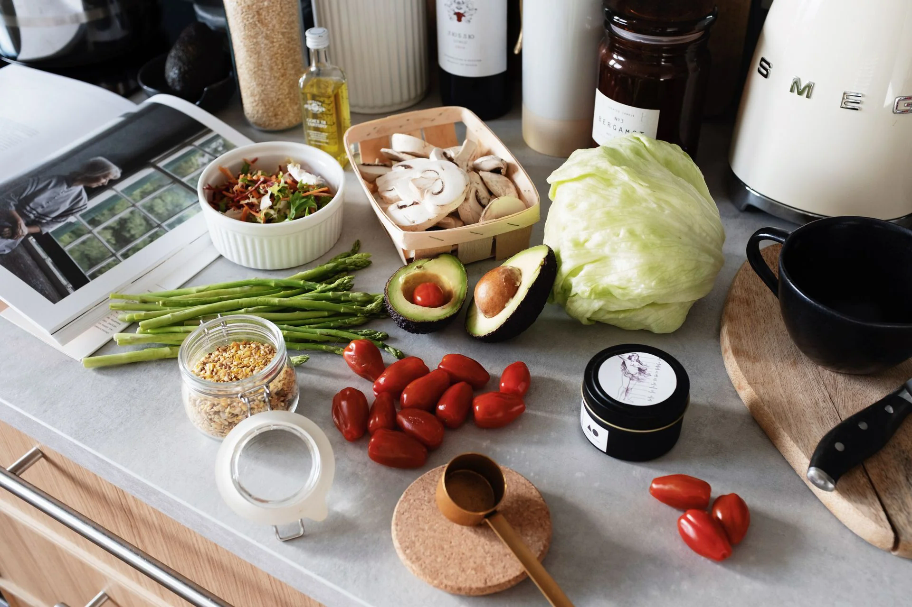

Imagem ilustrativa · não retrata o local ou a equipe
Imagem ilustrativa · não retrata o local ou a equipe01 / Nutrição funcional · São José do Rio Preto
Ciência no cuidado. Comida na vida real.
Diulia Vecchi. Nutrição clínica funcional, cuidado intestinal e acompanhamento nutricional na cirurgia bariátrica. Conhecimento que também chega à cozinha, em receitas para o dia a dia.
- CRN 65064
- Formada pela UNIP
- Nutrição Clínica Funcional

Imagem ilustrativa · não retrata o local ou a equipe02 / Áreas de atuação e formação
Um olhar funcional para a sua alimentação.
Nutrição clínica funcional
Área de pós-graduação declarada no currículo institucional da nutricionista.
Cirurgia bariátrica
Formação em manuseio nutricional na cirurgia bariátrica, com atenção às necessidades alimentares desse processo.
Modulação intestinal
Área de formação apresentada no currículo profissional.
Educação alimentar e receitas
Conteúdos que aproximam os alimentos e o preparo das refeições da rotina de quem busca acompanhamento.
 Imagem ilustrativa · não retrata o local ou a equipe
Imagem ilustrativa · não retrata o local ou a equipe03 / Trajetória & cuidado
Formação que encontra a sua rotina.
Diulia é formada em Nutrição pela UNIP e apresenta pós-graduações em Nutrição Clínica Funcional e Manuseio Nutricional na Cirurgia Bariátrica. Seu currículo também reúne formação em modulação intestinal. No perfil, o conhecimento divide espaço com receitas e conversas sobre alimentação.
- Pós em Nutrição Clínica Funcional pela Santa Casa de São Paulo
- Pós em Manuseio Nutricional na Cirurgia Bariátrica
- Formação em modulação intestinal e conteúdos de receitas
 Imagem ilustrativa · não retrata o local ou a equipe
Imagem ilustrativa · não retrata o local ou a equipe04 / Seu próximo passo
Vamos conversar?
São José do Rio Preto/SP · CEP 15015-020Conversar pelo WhatsApp ↗
Ver mapa do endereço +
Consulte os horários disponíveis pelo WhatsApp.
Nutricionista · CRN 65064 · São José do Rio Preto/SP